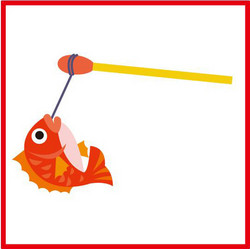
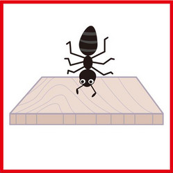

【大！ブレイン】とんちパズル出題と解答
きょう放送の「ヒット番組への道 ～大！ブレイン～」ご覧になって頂けましたか？
パズルで戦うアニメ「ファイ・ブレイン 神のパズル」とのコラボレーション企画でした。
てれび戦士が番組で挑戦した「とんちパズル」は以下の４つ。
図が一体何を表しているのか、ことばを答えよう。
みなさんも、とんちをきかせて考えてみてください。
1.

2.

3.

4.

【答え】
① タイトルマッチ （鯛取るマッチ）
② バスガイド （バスが井戸）
③ イタリア （板リア 板に逆さまの“アリ”）
④ レトルト食品 （“レ”取ると食品 「食」のレが取れている）
「ファイ・ブレイン 神のパズル」の放送は
Ｅテレ毎週（日）後5:30
投稿者:大天才テレビジョン社員３号 | 投稿時間:18時54分 | カテゴリ：お知らせ！ | 固定リンク


 " title="ソーシャルブックマークについて">
" title="ソーシャルブックマークについて">
※NHKサイトを離れます。
【押忍！シャイ番長友情の旅】 第１４回 金子の日記
「押忍！シャイ番長友情の旅」１４回目の放送、ご覧いただけましたか？
「試合前日の夕方までメンバーが揃わないなんて、野球の試合をするのは無理か…。」と
スタッフ一同（もちろん、シャイ番長も）正直あきらめていました。せっかく集めたお友達に、何と言ってお詫びをしようかな、と考えていた、そのとき！
何気ない会話の中から、太陽くんが、お父さんと野球をやることがあると判明！
さらに、
「太陽くんのお父さんは、次の日からお盆休みで、たまたま予定が空いていた」
「太陽くんのお父さんは、少年野球チームのコーチをやっていて、試合に興味津々だった」
と思わぬ幸運が重なって、
試合前日の夜7時に、ギリギリ計8人のチームメイトをそろえることができました！
シャイ番長、なんたる強運！！
ふだん口数が少なく、テンションがあがることがほとんどないシャイ番長も、このときばかりは、めずらしく興奮気味でした！
（太陽くんのお父さんはじめ、友達になってくださった皆さん、本当にどうもありがとうございました！！）
さて、来週は、いよいよ野球の試合！
野球ド素人のシャイ番長の奮闘ぶりを、いつもより少し時間を拡大してお届けします。
お楽しみに！
山あり谷ありの展開を、シャイ番長の日記でもお楽しみください。
左クリックをすると、原寸大になります。

投稿者:大天才テレビジョン社員１号 | 投稿時間:18時54分 | カテゴリ：お知らせ！ | 固定リンク
" title="ソーシャルブックマークについて">
※NHKサイトを離れます。
【読書の秋２０１３】島田太一
★読書の秋２０１３★
最近読んだ本は、「２５の小さなおはなし」という本です。
それは、「かばん」「風」「かさ」「手紙」「窓」「時計」の６つのくくりに分かれて、短い２５個のお話がはいってる本です。
その中で、一番印象深かった話は「窓売り」っていう題名です。
一人で留守番をしている男の子が、窓売りのおじさんに声をかけられました。
売っている窓は、今、望んでいる物が買った窓の外に表れるといわれて、おこづかいの１０円を出しました。
買った窓は素敵な人と出会えるという窓。
おじさんが去っていくと、家にパパとママが帰ってきた、というお話です。
えっと、この話は面白いというよりは、心がほっこりするようなお話ですね。
男の子は、とてもパパとママが好きなんですね。
そして、なるほど、とも思いました。
はい、この本は色々なジャンルのお話が詰まっています。
皆さんも、この秋は読書の秋にしてみてはいかがですか。
m(‐‐)m
★倍返ししたいこと★
小学校の低学年の時にお母さんと歩いてて､千円札が落ちてたんです。
その持ち主が周りにいるかどうか聞いたんですが、いないんです。
なので、交番に届けました。
そして、半年経って、落とし主の人がいなかったので、警察の方から連絡があって自分のお金になりました。
0からの1000倍返しです。
まぁ、色々考えて募金に出しました。
でも、帰る途中にハンカチを落としてしまって、15, 6ぐらい損しました。
はい、でも、その1000円でちょっとでも幸せになる人がいたらいいな…(´∞`※) οき

投稿者:島田太一 | 投稿時間:18時00分 | カテゴリ：We are 大天才テレビジョン | 固定リンク
" title="ソーシャルブックマークについて">
※NHKサイトを離れます。


{kind=link}
{kind=link}